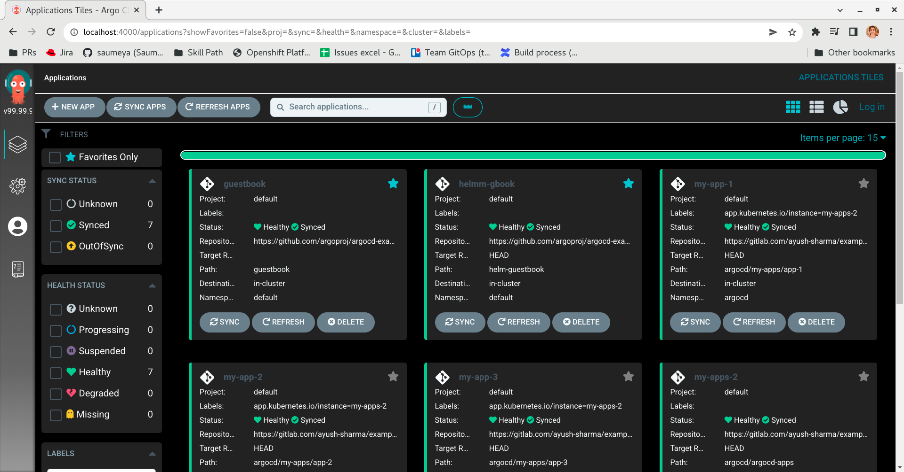

Custom Styles
This is a short blog that describes the simple steps to customize the look and feel of your Argo UI experience
Custom Styles are supported by ArgoCD and the steps are mentioned in the official docs.
Steps to use this amazing feature
- First create a css file and add your style corresponding to the styles in argo-ui repository.
- Add CSS file link to argocd config-map
- That's it, reload and see the magic!!
I have created a sample css for you too look at, this by no means is complete and is only for demonstration purposes. Link to style.css
To update the logo of argocd, in your css can add:
.nav-bar__logo img {
content: url(https://your-logo.png);
}kubectl edit configmap -n argocd argocd-cm -o yaml
And then add to data field:
apiVersion: v1
data:
ui.cssurl: https://saumeya.github.io/argo-custom-style/style.css
...
...